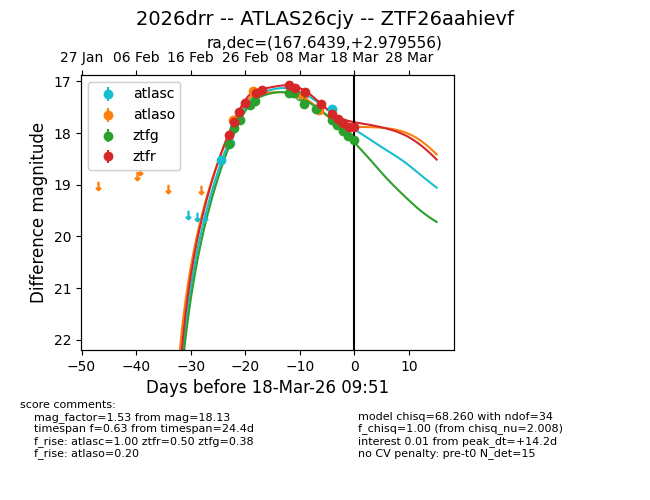
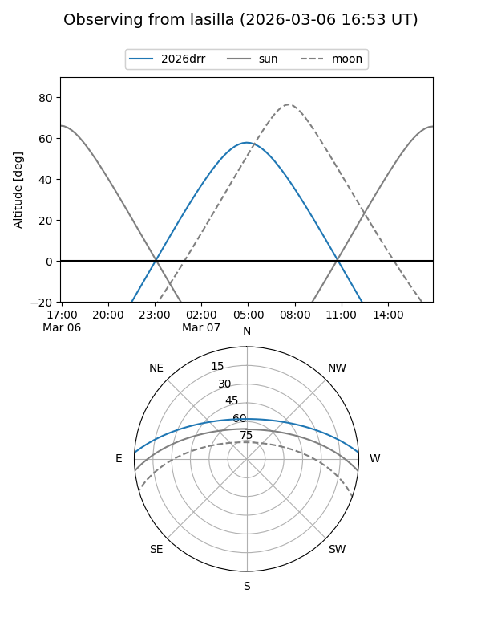
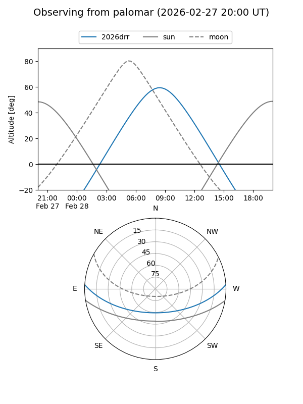
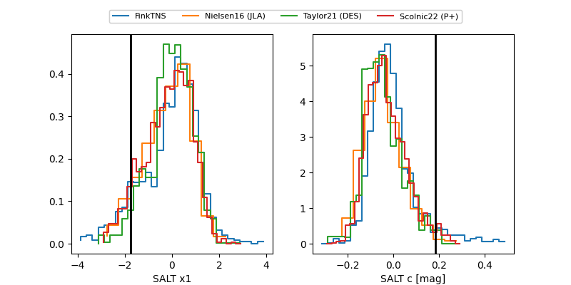

2026drr
Target 2026drr at 2026-03-18 09:53
Aliases and brokers:
FINK: link
Lasair: link
ALeRCE: link
TNS: link
YSE: link
alt names
ZTF26aahievf (ztf,fink_ztf)
2026drr (tns,yse)
ATLAS26cjy (atlas)
Coordinates:
equatorial (ra, dec) = 167.6439,+2.97956
equatorial (HMS+DMS) = 11:10:34.54,+02:58:46.40
galactic (l, b) = (253.6142,+55.87295)
Flags:
Photometry:
last atlasc=17.54, atlaso=17.77, ztfg=18.13, ztfr=17.87
3 atlasc, 6 atlaso, 14 ztfg, 15 ztfr detections
Lightcurve

Visibility


Additional plots
